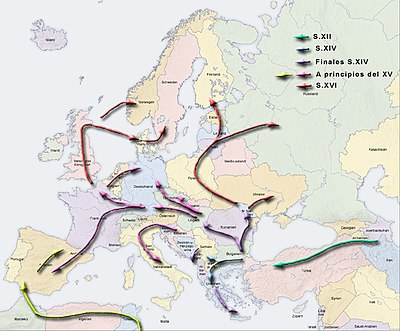

Цыгане
Запрос Цыгане перенаправляются сюда; см. также другие значения
Цыгане - одно из самых многочисленныхэтнических меньшистввЕвропы , слой
этнического населения общего индийского происхождения. Энтологи Елена Марушиакова и В .
Попов (Болгария) определяют их как МЕГРЭО - межгрупповое этническое образование. Это
Содержание[скрыть]
- Энтонимы
- Национальные символы
- История
Энтонимы
Наиболее распространённое самоназвание цыган, вынесенное ими из Индии — «ром» или «рома» у европейских цыган, «дом» у цыган
Ближнего Востока и Малой Азии, «лом» — у цыган Армении
Все эти названия восходят к индоарийскому «d’om» с первым церебральным звуком.
Церебральный звук, условно говоря, представляет собой нечто среднее между звуками «р», «д» и «л».
По другой версии «ром» происходит от «ромеи» —византийцы[9].
Национальные символы
| 8 апреля 1971 года в Лондоне состоялся первый Всемирный цыганский конгресс.
Результатом конгресса стало признание себя цыганами мира единой нетерриториальной
нацией и принятие национальных символов: флага и гимна, основанного на народной песне «Джелем, джелем» |
|
Поширення
Історія поширення
 |
 |
Час виходу з Індії різні дослідники називають періоди від 5-7
до 10-12 століть. Після виходу з Індії цигани спершу осіли в
Західній Азії і жили переважно у східній частиніВізантійської
імперії та закавказьких провінціях Ірану. Про це свідчать
лінгвістичні дані — в циганській мові є цілий пласт
запозичень з перської, грецької та вірменської мов. |
Див. також
Примітки
- Encyclopedia Britanica Online
- Ethnologue: Lenguages of the World
- EU demands action to tackle Roma poverty
- The Marginalization of Shadow Minorities (Roma)
Связаться со мной